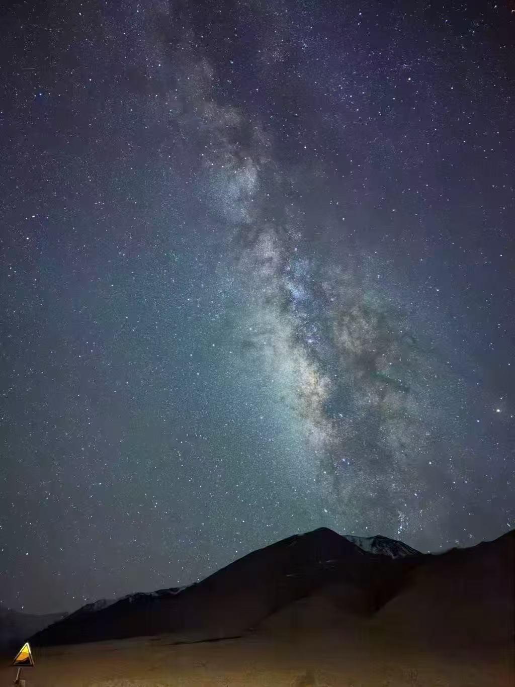
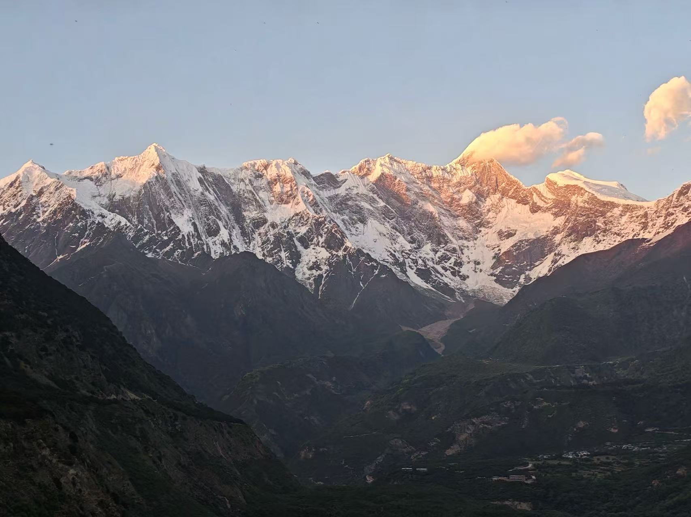
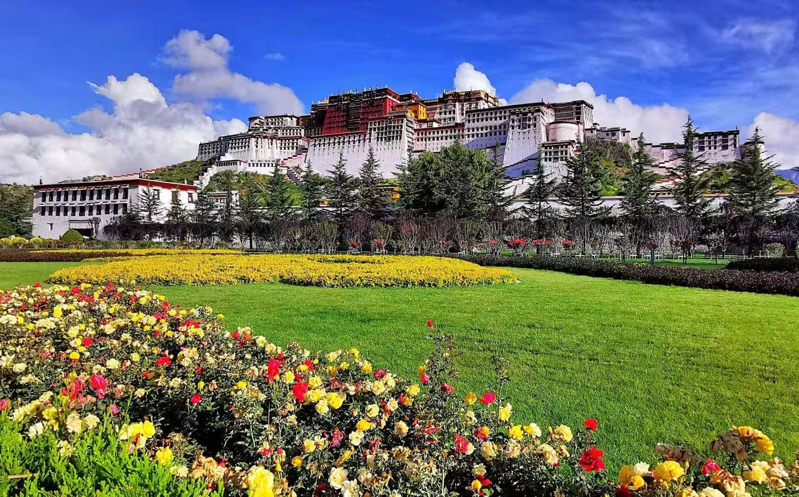

验收通过，待正式发布。本批沿用现有V3单模型、接待规则、线路包与素材库；没有新增页面、数据库表或依赖。报价变更单独保留为待确认项。
| 业务需求 | 怎么改 | 验收效果与边界 | 维护位置 | 状态 |
|---|---|---|---|---|
| 广告点击误标“以開口” | 已有版本修复标题空格、符号、月份前缀的识别，本批复核。 | 广告入口不直接算真实开口；没有批量改写历史标签。 | 原有消息分类与标签同步 | 此前已上线，本次复核通过 |
| 满2人发团、6人满团 | 幂等更新六条线路知识包中的成团事实和相关答疑话术。 | 1位可报名拼团；满2人达到发团门槛。2人不等于独享一车，实际团期与名额仍核对。 | 线路知识包、共用接待规则 | 验收通过，待正式发布 |
| #390 五月、8天、不上珠峰 | 所有配置团期或季节价的产品，推荐前复用日期核验工具。 | 承接跨轮月份和景点偏好，五月可介绍林芝8日；不推荐关闭季节的冬游。卡若拉冰川等常规线路景点保留。 | 日期核验、线路知识包 | 验收通过，待正式发布 |
| #425 长途车程与小团优势 | 补充六条线路的长途休息事实及统一接待指导。 | 如实承认长途路段，解释人少、座椅、照顾与休息；拼团不承诺随意延长景点停留。 | 线路知识包、共用接待规则 | 验收通过，待正式发布 |
| 同时点击或询问两条行程 | 入口标题统一识别，配对与差异作为entry_comparison数据，等待期合并展示；自然语言比较由现有模型处理。 | 默认先介绍较长一条。桃花11/9日差珠峰两天；常规10/8日均含珠峰，10日多林芝。明确短线或其他限制优先。 | 线路包配置，无新增页面 | 验收通过，待正式发布 |
| 点赞认可后继续介绍 | 保留既有贴图识别；介绍中保持队列，介绍后简短承接话题。 | 不再把已识别点赞当作看不清的图片；不重播介绍，也不把点赞当作选线、留资或报名同意。 | 贴图识别、队列、共用接待规则 | 验收通过，待正式发布 |
| #417/#420 包团入口、索取行程表先发图 | 模型输入新增按现有素材分类和线路绑定生成的行程图索引；正式介绍按实际交付记录去重。 | 未选线也能先给一张参考图，后续询问详情不擅自锁定线路；先讲一条，不堆两套逐日文字。客户明确选定后继续介绍。 | 模型上下文、素材解析、介绍队列，无新增页面 | 验收通过，待正式发布 |
| 增加沉默素材 | 加入4组业务文案、3张原图，使用既有素材规则与图片去重。 | 纯玩承诺配布达拉宫、美食纯文字、珠峰星空、日照金山。星空限含珠峰线路；不冒称今日拍摄，不为配图换话题。 | AI接待策略 → 场景素材（/ai-strategy），原图在既有素材库 | 验收通过，待正式发布 |
| 报价格式与计算口径 | 保留现行金额、折扣与报价模板，未把示例¥1写成售价。 | 仍需明确：仅隐藏早鸟/限时文案，还是改用原价按人数重新计算；后者需折扣单位及叠加规则。 | 现有报价规则与模板 | 未上线：等待计算口径确认 |
#420的历史记录中，行程图已在可用素材里，但未选线时模型返回空asset_keys，生成两套逐日文字；#417连续点线路再提包团时也继续追问线路，没有安排图片。此次修复的是资料可见性与接待顺序，不是替换图片发送通道。行程图索引根据素材分类和绑定生成，不硬编码具体图片ID；图片已交付后，正式介绍跳过同图，继续其他内容。
三个原图分别用于星空、日照金山和布达拉宫配图；美食用文字，不借不相关图片。运营可在现有场景素材页调整启用、文案、线路、标签和图片绑定；线路配对目前通过知识包维护，没有额外开发管理页面。



下面保留本轮采用的真实模型输出，包括既有报价模板。自动检查与人工复核通过表示这些场景达到本批目标，不代表模型对所有未来表达均不会出错。报价中的早鸟／限时文案仍属于未上线的待确认项目。
客户／事件：西藏精華-8天 拉薩+珠峰
請問您大概想幾月出發呢？
客户／事件：明年6月，先在這裡了解
您好～我是China2Go的旅遊顧問～很高興認識你 2027年6月每週四都有出發，我先給您看這條8日的行程～ 先給您看一下我們的8日精華西藏行程～ 拉薩會安排布達拉宮、大昭寺與八廓街，也到扎基寺和色拉寺，看看當地的人文風景～ 珠峰大本營也是這條行程的重點，這是團友拍到的日照金山，能否看到要配合當天天氣喔～ 珠峰那晚安排供氧絨布旅館，有獨立衛浴喔～ 其他晚數安排希爾頓系列供氧酒店，給您看看住宿照片～ 我們的拼團最多6人，安排9座VIP車，給您看看車內座位～ 隨車配備醫用氧氣鋼瓶、葡萄糖及每人一罐便攜氧氣。 我們 China2Go 國旅環球主要接待港澳台與全球外賓，安排純玩小團。 我們把無購物寫在合約上，有購物行為依約賠償人民幣5,000元。 了解～您先在這裡看就好，有想知道的再問我。2027年6月的每週四都有出發，請問您們大概幾位一起出發呢？
实际计划交付图片：tibet_essence_8d_itinerary、tibet_essence_8d_potala、tibet_essence_8d_zaki、tibet_essence_8d_sera、tibet_essence_8d_everest、tibet_essence_8d_rongbuk、rongbuk-bathroom-20261016、tibet_essence_8d_hotel_1、tibet_essence_8d_hotel_2、tibet_essence_8d_vehicle、tibet_essence_8d_vehicle_oxygen、tibet_essence_8d_guests
客户／事件：我一個人可以報名嗎？會不會人不夠就不出發？
一個人可以報名拼團喔～這條是滿2人發團、6人滿團，發團機率很高，不用擔心湊不到人。實際名額還是要以您決定的日期再確認一下。
客户／事件：現在有朋友要一起，我們2位就能發團了嗎？
你們2位就可以報名拼團了～這條是滿2人發團、6人滿團，所以2位就達到最低發團人數，不用再等湊人。 不過2位是和其他旅客一起拼車，不是自己一台車；實際名額還是要用你們決定的日期再確認一下。
客户／事件：我們選拼團，車上就只有我們兩個嗎？
不是喔～拼團是和其他旅客一起拼車，最多6人，2位只是達到最低發團人數，不代表車上只有你們兩位。
客户／事件：【silence：计时/队列节点】
我們拼團最多6個人，坐的是9座VIP車，位置坐起來不會擠～ 另外跟您分享一個行程亮點：布達拉宮觀景下午茶＋藏裝拍攝，都是我們行程標配、免費贈送的體驗喔！有風景、有體驗，又不趕行程，您會期待嗎？ ❤️
实际计划交付图片：tibet-followup-potala-tea-20261019
客户／事件：兩位拼團可以自己選任何一天嗎？
拼團是照固定班期出發喔～這條2027年6月是每週四出發，像6/3、6/10、6/17都有班期，不能自己指定任何一天。 要自己選日期出發的話，是4位以上才能安排獨立成團，你們2位拼團就跟每周四的班期走。 您們這趟最期待的是珠峰，還是拉薩的人文景點呢？
客户／事件：3~4月｜西藏桃花節不上珠峰 9日
您好，請問預計幾位想來旅遊？ （幫我回答一下大概人數，才能快速幫助您匹配適合的方案跟團型）
客户／事件：一個人，先在這裡看就好
您好～我是China2Go的旅遊顧問～很高興認識你 我們專門做4–10人小團、全外賓不拼內賓、零購物的西藏行程！ 接下來帶您看桃花9日、不上珠峰的完整行程～ 這是我們精選9日的桃花節行程！從林芝低海拔入藏，循序漸進的海拔可以給身體時間適應高原～ 而行程完整涵蓋【林芝+波密＋拉薩+山南+日喀則】等最重要的旅遊景點！ 這個行程除了必去的兩大桃花景點－嘎拉桃花村與波密桃花溝外，還有加碼去到以雪山湖泊、王宮遺址、千年古堡、以及最重要的拉薩秘境寺廟的特殊桃花行程 除了波密地區以外，其他住宿安排都升級為國際品牌希爾頓飯店喔！希爾頓是西藏最穩定且是12小時提供85-90%濃度的氧氣呦！而含氧量在西藏這樣的高原地區是很重要的！ 因為桃花節不加價升級6小團！車型則是2025年最新車，用VIP航空座椅車，每個人都有自己的大座位，並且有自帶製氧機，讓您舒適又安心～💕 然後~這台車除了前面有緊急醫療氧氣鋼瓶！還特別裝了大家都可以吸的彌散式氧氣，簡單說就是～只要一開車，車子內部就在一個【移動氧艙】 在西藏這樣的高原環境，住宿與車配備好！真的很重要 還有一點，我們是唯一敢把無購物寫在合約上的旅行社，有任何購物行為賠償5000！ 我們很多自己一位的旅客，非常歡迎您～ 行程裡有一段是從日喀則搭拉日鐵路回拉薩，坐火車看沿途山谷風景，跟全程拉車的感覺很不一樣。這趟您最期待哪一段呢？
实际计划交付图片：routes12-9d-itinerary、routes12-pabongka、routes12-xiuba-fort、routes12-hilton-room、routes12-hilton-oxygen、routes12-vehicle、routes12-vehicle-oxygen、routes12-hotel-secondary
客户／事件：明年5月
跟您說明一下，桃花9日是季節性行程，2027年只開放3月20日到4月10日，明年5月沒有團期喔。 如果5月一定要走，我們還有一條「林芝入藏、不上珠峰8日」，林芝進、拉薩出，每週二出發，行程同樣不去珠峰；不過5月初正逢連假，那幾天的費用要另外確認。您是有彈性可以改到3、4月看桃花，還是希望維持5月出發呢？
客户／事件：8天，不去珠峰，可以先了解行程？
了解～您想要8天、不上珠峰的話，我們有一條「林芝入藏、不上珠峰8日」，林芝進、拉薩出。跟剛看的桃花9日比，它沒有桃花和珠峰，但南迦巴瓦、魯朗林海、巴松措，還有拉薩的布宮、八廓街、扎基寺、色拉寺都排進去，回程搭拉日鐵路回拉薩。 5月是每週二出發，5/11、5/18、5/25都有團期，實際名額還要確認一下；不過5月初正逢連假，那幾天費用需要另外核對。 時間上若能避開月初連假，您想先看這條的完整行程嗎？
实际计划交付图片：tibet_linzhi_8d_itinerary
客户／事件：那就林芝入藏8日，2027年5月11日，給我完整行程
先給您看「林芝入藏、不上珠峰8日」的行程圖～從林芝到拉薩、日喀則，最後搭拉日鐵路回拉薩。 這條保留林芝、拉薩與日喀則，不安排珠峰和絨布住宿；前兩晚住林芝，最後搭拉日鐵路回拉薩。 5月11日是週二，正好是這條每週二出發的團期，實際名額還要確認一下。 一位也可以報名拼團，滿2人發團、6人滿團，成團機會很高，不用湊到很多人才能走。這條所有酒店都有供氧，日喀則還升級一晚五星。 您這趟想看自然風景，還是也想走寺廟人文？
客户／事件：【silence：计时/队列节点】
跟您分享一張日照金山，見者好運唷😊 您這趟林芝進、拉薩出，魯朗林海和色季拉山那一段都是看山看森林的風景，希望出發時也遇到好天氣～
实际计划交付图片：tibet-followup-golden-mountains-20261025
客户／事件：這條的卡若拉冰川有安排嗎？
有的～第6天從拉薩往日喀則這段，會依序走羊卓雍措、卡若拉冰川和白居寺，卡若拉冰川是安排在行程裡的。不過那段路海拔不低，車上都有供氧設備，沿途司機和導遊也會找地方讓大家休息。您會想在這段多留點時間拍照，還是比較希望行程走得順一點？
客户／事件：桃花加珠峰11日
您好，請問預計幾位想來旅遊？ （幫我回答一下大概人數，才能快速幫助您匹配適合的方案跟團型）
客户／事件：我們2位，2027年3月26日，選拼團
您好～我是China2Go的旅遊顧問～很高興認識你 我們專門做4–10人小團、全外賓不拼內賓、零購物的西藏行程！ 接下來帶您看桃花＋珠峰11日的完整行程～ 這是我們精選11日的行程！從林芝低海拔入藏，循序漸進的海拔可以給身體時間適應高原～ 而行程完整涵蓋【林芝+波密＋拉薩+山南+日喀則以及珠峰大本營】等最重要的旅遊景點！ 這個行程除了必去的兩大桃花景點－嘎拉桃花村與波密桃花溝外，還有加碼去到以雪山湖泊、王宮遺址、千年古堡、以及最重要的拉薩秘境寺廟的特殊桃花行程 除了波密和珠峰地區以外，其他住宿安排都升級為國際品牌希爾頓飯店喔！希爾頓是西藏最穩定且是12小時提供85-90%濃度的氧氣呦！而含氧量在西藏這樣的高原地區是很重要的！另外我們整體也是所有酒店都有供氧氣的～ 而您選的是我們限量上珠峰的桃花節行程．這是獨有＂升級＂在珠峰絨布旅館的住宿！不過因為房間數較少，訂完就沒有了喔！ 這是絨布旅館的住宿環境，有獨立廁所以及供氧，不過真的是限量喔！！！！ 讓桃花能加入更深的西藏色彩，讓你不是只有賞桃花而已，而是真正的擁有了西藏獨有的桃花特色 因為桃花節不加價升級6小團！車型則是2025年最新車，用VIP航空座椅車，每個人都有自己的大座位，並且有自帶製氧機，讓您舒適又安心～💕 然後~這台車除了前面有緊急醫療氧氣鋼瓶！還特別裝了大家都可以吸的彌散式氧氣，簡單說就是～只要一開車，車子內部就在一個【移動氧艙】 在西藏這樣的高原環境，住宿與車配備好！真的很重要 還有一點，我們是唯一敢把無購物寫在合約上的旅行社，有任何購物行為賠償5000！ 您們2位選的2027年3月26日在這條線的出發區間內（3/20–4/10），拼團滿2人就發團、6人滿團，實際名額我們再幫您確認一下～ 上面11天的行程和住宿、用車照片都看過了嗎？另外想請問，您這次是跟家人還是朋友一起出發呢？
实际计划交付图片：routes12-11d-itinerary、routes12-pabongka、routes12-xiuba-fort、routes12-hilton-room、routes12-hilton-oxygen、routes12-rongbuk-room、rongbuk-bathroom-20261016、routes12-vehicle、routes12-vehicle-oxygen、routes12-hotel-secondary
客户／事件：景點之間會不會移動太遠？我擔心一直坐車累
部分路段確實車程較長，實際時間要看當天路況。導遊和司機會沿途找合適的地方安排上廁所和休息，不會一路硬撐。 你們這團是4–6人小團、9座VIP航空座椅車，每個人都有自己的大座位，車上也有製氧機和彌散式供氧，坐起來比較舒服。不過我沒辦法保證完全不累，這點先跟您說清楚。
客户／事件：那我能要求每個景點多停一小時嗎？
拼團的景點停留時間是整團統一安排，沒辦法因為一兩位客人要求每個景點都多停一小時，這點先跟您說清楚。導遊會依當天路況和現場情況抓時間，途中也會找合適的地方安排上廁所和休息。 如果您希望時間彈性大一點，可以考慮自己一團；不過這條線是4位以上才能獨立成團，你們2位目前是拼團。你們這趟最想在哪個景點多留一點時間呢？
客户／事件：了解，車上供氧和座椅舒服就好。先在這裡看
好～那就在這裡看就好，有想了解的隨時問我。 你們這團搭的是9座VIP航空座椅車，每個人有自己的大座位，車內有彌散式供氧和緊急醫療氧氣鋼瓶；長路段坐起來會舒服些，途中導遊司機也會找合適的地方讓大家上廁所、休息。
客户／事件：【silence：计时/队列节点】
補充一個跟坐車有關的安排～第10天是從日喀則搭拉日鐵路回拉薩，不用再走一段公路，沿途風景也很值得看，剛好可以讓腿休息一下。 你們擔心的部分我盡量說清楚，還有哪一段車程想先了解的嗎？
客户／事件：沿途會找地方上廁所和休息對嗎？
對的，導遊和司機會沿途找合適的地點讓大家上廁所、休息，上車前也會先提醒，不用擔心一路憋著。你們這趟最期待哪一段風景呢？珠峰還是桃花？
客户／事件：西藏精華-8天 拉薩+珠峰
請問您大概想幾月出發呢？
客户／事件：西藏全覽-10天 林芝+拉薩+珠峰
（本节点没有另发文字）
客户／事件：【intro：计时/队列节点】
您好～我是China2Go的旅遊顧問～很高興認識你 您同時看了精華8日和全覽10日，我先給您看較完整的10日行程～兩條都有珠峰；10日還涵蓋林芝，8日則以拉薩進出，重點安排拉薩與珠峰。 先給您看一下我們的10日全覽西藏行程～ 這條從林芝進藏，會去巴松措、秀巴古堡與魯朗林海，給您看看景點照片～ 拉薩會安排布達拉宮、大昭寺與八廓街，也到扎基寺和色拉寺，看看當地的人文風景～ 其他晚數安排希爾頓系列供氧酒店，給您看看住宿照片～ 我們的拼團最多6人，安排9座VIP車，給您看看車內座位～ 隨車配備醫用氧氣鋼瓶、葡萄糖及每人一罐便攜氧氣。 珠峰大本營也是這條行程的重點，這是團友拍到的日照金山，能否看到要配合當天天氣喔～ 珠峰住宿會依出發季節安排；冬季絨布旅館關閉，改住山下的珠峰小鎮。 我們 China2Go 國旅環球主要接待港澳台與全球外賓，安排純玩小團。 我們把無購物寫在合約上，有購物行為依約賠償人民幣5,000元。 請問您們大概幾位一起出發呢？
实际计划交付图片：tibet_overview_10d_itinerary、tibet_overview_10d_basum、tibet_overview_10d_castle、tibet_overview_10d_potala、tibet_overview_10d_zaki、tibet_overview_10d_sera、tibet_overview_10d_hotel_1、tibet_overview_10d_hotel_2、tibet_overview_10d_vehicle、tibet_overview_10d_vehicle_oxygen、tibet_overview_10d_everest、tibet_overview_10d_lulang_guests
客户／事件：明年6月，我們2位朋友同行，先在這裡看
了解～2027年6月這條10日行程有公布團期，每週二出發，例如6/1、6/8、6/15；實際名額我們再確認一下。 這趟您們最期待哪一段風景呢？
客户／事件：8天是沒有珠峰嗎？
有的～您點的「西藏精華8天」是拉薩進出、有到珠峰大本營的；我們另外還有一條「不上珠峰・林芝入藏8日」，那條才沒有珠峰。 跟10日比，8日少了林芝那段，其他拉薩、日喀則和珠峰的安排都有～
客户／事件：我只有8天假期，就選精華8天，請介紹
先給您看一下我們的8日精華西藏行程～ 拉薩會安排布達拉宮、大昭寺與八廓街，也到扎基寺和色拉寺，看看當地的人文風景～ 珠峰大本營也是這條行程的重點，這是團友拍到的日照金山，能否看到要配合當天天氣喔～ 珠峰那晚安排供氧絨布旅館，有獨立衛浴喔～ 其他晚數安排希爾頓系列供氧酒店，給您看看住宿照片～ 我們的拼團最多6人，安排9座VIP車，給您看看車內座位～ 隨車配備醫用氧氣鋼瓶、葡萄糖及每人一罐便攜氧氣。 我們 China2Go 國旅環球主要接待港澳台與全球外賓，安排純玩小團。 我們把無購物寫在合約上，有購物行為依約賠償人民幣5,000元。 這條8天是每週四出發，2027年6月有6/3、6/10、6/17的團期，實際名額我們再確認一下～您們2位朋友同行的話，行程走起來剛好。日後如果想看費用或想調整哪一天的安排，再跟我說就好。
实际计划交付图片：tibet_essence_8d_itinerary、tibet_essence_8d_rongbuk、rongbuk-bathroom-20261016、tibet_essence_8d_guests
客户／事件：【silence：计时/队列节点】
輕輕跟您補充一點～這條拼團是滿2人發團、最多6人一車，您們2位朋友一起報名就達到成團門檻，不過具體那天的名額還是要另外確認一下。 另外珠峰那晚安排的是供氧絨布旅館，房間有獨立衛浴；能不能看到日照金山就要看當天天氣了。您們會想先了解這8天怎麼分配在拉薩、日喀則和珠峰嗎？
客户／事件：拉薩集合沒問題，還是兩位朋友
好的～拉薩集合沒問題，你們兩位朋友同行，這條8天就是拉薩進出，走拉薩、羊卓雍措與卡若拉冰川、日喀則，再到珠峰大本營，回程安排拉日鐵路返回拉薩，剛好八天走完不用趕。 6月是每週四出發，6/3、6/10、6/17這幾天你們的假比較好配合哪一天呢？
客户／事件：3~4月｜西藏桃花節＋珠峰 11日
您好，請問預計幾位想來旅遊？ （幫我回答一下大概人數，才能快速幫助您匹配適合的方案跟團型）
客户／事件：3~4月｜西藏桃花節不上珠峰 9日
（本节点没有另发文字）
客户／事件：【start：计时/队列节点】
（本节点没有另发文字）
客户／事件：👍
您好～我是China2Go的旅遊顧問～很高興認識你 您同時看了桃花9日和11日，我先給您看較完整的11日行程～兩條的主要差別是11日多了珠峰段，增加2天。 我們專門做4–10人小團、全外賓不拼內賓、零購物的西藏行程！ 接下來帶您看桃花＋珠峰11日的完整行程～ 這是我們精選11日的行程！從林芝低海拔入藏，循序漸進的海拔可以給身體時間適應高原～ 而行程完整涵蓋【林芝+波密＋拉薩+山南+日喀則以及珠峰大本營】等最重要的旅遊景點！ 這個行程除了必去的兩大桃花景點－嘎拉桃花村與波密桃花溝外，還有加碼去到以雪山湖泊、王宮遺址、千年古堡、以及最重要的拉薩秘境寺廟的特殊桃花行程 除了波密和珠峰地區以外，其他住宿安排都升級為國際品牌希爾頓飯店喔！希爾頓是西藏最穩定且是12小時提供85-90%濃度的氧氣呦！而含氧量在西藏這樣的高原地區是很重要的！另外我們整體也是所有酒店都有供氧氣的～ 而您選的是我們限量上珠峰的桃花節行程．這是獨有＂升級＂在珠峰絨布旅館的住宿！不過因為房間數較少，訂完就沒有了喔！ 這是絨布旅館的住宿環境，有獨立廁所以及供氧，不過真的是限量喔！！！！ 讓桃花能加入更深的西藏色彩，讓你不是只有賞桃花而已，而是真正的擁有了西藏獨有的桃花特色 因為桃花節不加價升級6小團！車型則是2025年最新車，用VIP航空座椅車，每個人都有自己的大座位，並且有自帶製氧機，讓您舒適又安心～💕 然後~這台車除了前面有緊急醫療氧氣鋼瓶！還特別裝了大家都可以吸的彌散式氧氣，簡單說就是～只要一開車，車子內部就在一個【移動氧艙】 在西藏這樣的高原環境，住宿與車配備好！真的很重要 還有一點，我們是唯一敢把無購物寫在合約上的旅行社，有任何購物行為賠償5000！ 謝謝您的回覆～這條11日除了桃花和珠峰，拉薩段也安排了布達拉宮、大昭寺、八廓街，還會帶大家去財神廟扎基寺，自然風景和人文都有走到。 您這次是跟家人還是朋友一起出發呢？
实际计划交付图片：routes12-11d-itinerary、routes12-pabongka、routes12-xiuba-fort、routes12-hilton-room、routes12-hilton-oxygen、routes12-rongbuk-room、rongbuk-bathroom-20261016、routes12-vehicle、routes12-vehicle-oxygen、routes12-hotel-secondary
客户／事件：我們3位朋友，2027年3月26日，先在這裡看
3位朋友一起走沒問題～2027年3月26日剛好在這條線的出發區間（3/20–4/10）內，有公布團期，實際名額我們再確認。 先在這裡看完全OK，有想了解的地方直接問我就好～ 想先確認一下，這趟你們會想上珠峰看看嗎？ 歡迎，我是China2Go國旅環球，我們的拼團升級為滿2人發團、6人滿團，最適合像您們人數少前往的，輕鬆自在！先給您介紹一下行程
客户／事件：我們決定不上珠峰，改選桃花9日，給我看9日的行程
我們專門做4–10人小團、全外賓不拼內賓、零購物的西藏行程！ 接下來帶您看桃花9日、不上珠峰的完整行程～ 這是我們精選9日的桃花節行程！從林芝低海拔入藏，循序漸進的海拔可以給身體時間適應高原～ 而行程完整涵蓋【林芝+波密＋拉薩+山南+日喀則】等最重要的旅遊景點！ 這個行程除了必去的兩大桃花景點－嘎拉桃花村與波密桃花溝外，還有加碼去到以雪山湖泊、王宮遺址、千年古堡、以及最重要的拉薩秘境寺廟的特殊桃花行程 除了波密地區以外，其他住宿安排都升級為國際品牌希爾頓飯店喔！希爾頓是西藏最穩定且是12小時提供85-90%濃度的氧氣呦！而含氧量在西藏這樣的高原地區是很重要的！ 因為桃花節不加價升級6小團！車型則是2025年最新車，用VIP航空座椅車，每個人都有自己的大座位，並且有自帶製氧機，讓您舒適又安心～💕 然後~這台車除了前面有緊急醫療氧氣鋼瓶！還特別裝了大家都可以吸的彌散式氧氣，簡單說就是～只要一開車，車子內部就在一個【移動氧艙】 在西藏這樣的高原環境，住宿與車配備好！真的很重要 還有一點，我們是唯一敢把無購物寫在合約上的旅行社，有任何購物行為賠償5000！ 9日不上珠峰的行程看完了～你們3位走拼團沒問題，這條滿2人就發團、6人滿團，3位剛好是舒服的小團人數。先在這裡慢慢看就好，有想了解的地方直接問我～ 你們這趟比較期待桃花，還是沿途的雪山風景呢？
实际计划交付图片：routes12-9d-itinerary
客户／事件：【silence：计时/队列节点】
跟你們分享一個行程裡的安排～布達拉宮觀景下午茶＋藏裝拍攝，都是標配、免費贈送的體驗喔！有風景、有體驗，又不用趕行程～你們3位朋友一起來，剛好在布達拉宮前拍張合照也很值得紀念。
实际计划交付图片：tibet-followup-potala-tea-20261019
客户／事件：9天還有車上的氧氣設備嗎？
有喔，這兩條桃花行程的車上配有製氧機、彌散式供氧和緊急醫療氧氣鋼瓶。 9日和11日用的是同一套車輛配置，你們3位朋友出門，坐一起也不會擠～
客户／事件：3~4月｜西藏桃花節不上珠峰 9日
您好，請問預計幾位想來旅遊？ （幫我回答一下大概人數，才能快速幫助您匹配適合的方案跟團型）
客户／事件：我們2位朋友，2027年3月26日，先在這裡了解
您好～我是China2Go的旅遊顧問～很高興認識你 我們專門做4–10人小團、全外賓不拼內賓、零購物的西藏行程！ 接下來帶您看桃花9日、不上珠峰的完整行程～ 這是我們精選9日的桃花節行程！從林芝低海拔入藏，循序漸進的海拔可以給身體時間適應高原～ 而行程完整涵蓋【林芝+波密＋拉薩+山南+日喀則】等最重要的旅遊景點！ 這個行程除了必去的兩大桃花景點－嘎拉桃花村與波密桃花溝外，還有加碼去到以雪山湖泊、王宮遺址、千年古堡、以及最重要的拉薩秘境寺廟的特殊桃花行程 除了波密地區以外，其他住宿安排都升級為國際品牌希爾頓飯店喔！希爾頓是西藏最穩定且是12小時提供85-90%濃度的氧氣呦！而含氧量在西藏這樣的高原地區是很重要的！ 因為桃花節不加價升級6小團！車型則是2025年最新車，用VIP航空座椅車，每個人都有自己的大座位，並且有自帶製氧機，讓您舒適又安心～💕 然後~這台車除了前面有緊急醫療氧氣鋼瓶！還特別裝了大家都可以吸的彌散式氧氣，簡單說就是～只要一開車，車子內部就在一個【移動氧艙】 在西藏這樣的高原環境，住宿與車配備好！真的很重要 還有一點，我們是唯一敢把無購物寫在合約上的旅行社，有任何購物行為賠償5000！ 您們兩位朋友2027年3月26日出發，這天在桃花9日的3/20–4/10出發區間內，也有公布團期；實際名額我們再幫您確認。 這條拼團滿2人就發團、6人滿團，兩位一起報名沒問題～ 您們這趟最期待的是桃花，還是沿途的雪山風景呢？
实际计划交付图片：routes12-9d-itinerary、routes12-pabongka、routes12-xiuba-fort、routes12-hilton-room、routes12-hilton-oxygen、routes12-vehicle、routes12-vehicle-oxygen、routes12-hotel-secondary
客户／事件：👍
這次的9日行程，拉薩段會安排布達拉宮、大昭寺和八廓街，還有財神廟扎基寺；第8天再從日喀則搭拉日鐵路回拉薩，沿途風景也很值得期待～ 兩位朋友一起走這趟，節奏上我也可以再幫您細看。
客户／事件：我最有興趣的是當地美食，尤其氂牛酸奶
了解～那這趟可以吃得很開心。我們團費包含飯店早餐，午、晚餐不含，剛好保留彈性，讓您可以挑自己真正想吃的當地味道。氂牛酸奶在拉薩、日喀則一帶不難找，導遊也會依當天路線協助推薦附近口碑不錯的店。 您們喜歡路邊小吃、甜茶館這種在地吃法，還是想安排比較正式的藏式餐廳呢？
客户／事件：行程先慢慢看，美食你可以再分享給我
沒問題～行程您慢慢看，我先跟您聊吃的😊 這條路線因為午、晚餐不含，反而很有彈性：拉薩八廓街一帶的甜茶館、藏麵、酥油茶、氂牛酸奶，日喀則也有不少在地小館，導遊會依當天路線推薦附近順路、衛生的選擇。 氂牛酸奶口感偏濃郁，可以先試原味，再加一點糖或蜂蜜；怕酸的話從甜茶配著吃比較好入口。 早春早晚溫差大，熱的甜茶和湯麵會比冰涼的食物舒服一些。
客户／事件：【silence：计时/队列节点】
再跟您分享幾樣西藏味道：🥣 氂牛酸奶、🍦 氂牛冰淇淋，奶香都很濃；另外甜茶、藏麵、酥油茶也是當地日常會吃的。 您會想先試氂牛酸奶，還是甜茶配藏麵呢？
客户／事件：這些美食是自己買對嗎？
是的～團費含飯店早餐，午、晚餐不含，所以路上想吃什麼由您們自己挑、自己付。導遊會依當天路線推薦順路又衛生的店，想吃的時候也能請他協助點餐。
客户／事件：我人數有4位以上，想自己包團
您好～我是China2Go的旅遊顧問～很高興認識你 4位以上就可以自己一團出發，不用和其他旅客併團～行程和出發日期都能依您們的時間安排。先給您看這條參考行程：
实际计划交付图片：routes12-11d-itinerary
客户／事件：都可以評估考量,請傳詳細行程表與價錢給我謝謝您
上面那張是11日行程的每日安排，林芝進、拉薩出；跟9日最大的差別是11日多走珠峰段兩天（絨布寺、珠峰大本營），9日不上珠峰。住宿除了波密和珠峰地區以外，其他都升級國際品牌希爾頓。 【西藏桃花節11日遊】 出發時間：3/20-4/10（每週五、六、日、一發團） 拼團升級「4-6人小團」優惠價：人民幣¥ 12,180 /人（截至2026/11/24前報名，限時優惠） 包含：高原保障險、入藏文件、全程供氧住宿（含早餐）、9座VIP供氧車、導遊、門票 不含：機票、午晚餐、小費、個人花費 您們是4位以上想自己一團：4位獨立成團在原團費基礎上每人加400元，6位獨立成團按原價。人數確認後就能算出您們的準確金額。 您這次預計跟家人還是朋友一起出發呢？
客户／事件：還沒確定幾位，只知道4位以上；先不要算總價
了解～那先不算總價，等您們人數確定後再一起核對就好。4位以上可以自己一團，出發日期也能依您們的時間安排，不用配合固定班期。行程您先慢慢看，有想調整的地方都可以跟我說。 您們大概計劃什麼時候出發呢？
客户／事件：我們想2027年3月26日出發，先和家人討論
2027年3月26日剛好是週五，在桃花線3/20–4/10的出發區間內，這天有公布團期；您們4位以上也可以自己一團走這天出發。實際名額我們再幫您確認一下。 您先和家人討論～我們也可以接著協助您們確認出發安排。方便傳一下您的 LINE QR Code 給我嗎？
客户／事件：那就選桃花11日，請給我後面的介紹
我們專門做4–10人小團、全外賓不拼內賓、零購物的西藏行程！ 接下來帶您看桃花＋珠峰11日的完整行程～ 這是我們精選11日的行程！從林芝低海拔入藏，循序漸進的海拔可以給身體時間適應高原～ 而行程完整涵蓋【林芝+波密＋拉薩+山南+日喀則以及珠峰大本營】等最重要的旅遊景點！ 這個行程除了必去的兩大桃花景點－嘎拉桃花村與波密桃花溝外，還有加碼去到以雪山湖泊、王宮遺址、千年古堡、以及最重要的拉薩秘境寺廟的特殊桃花行程 除了波密和珠峰地區以外，其他住宿安排都升級為國際品牌希爾頓飯店喔！希爾頓是西藏最穩定且是12小時提供85-90%濃度的氧氣呦！而含氧量在西藏這樣的高原地區是很重要的！另外我們整體也是所有酒店都有供氧氣的～ 而您選的是我們限量上珠峰的桃花節行程．這是獨有＂升級＂在珠峰絨布旅館的住宿！不過因為房間數較少，訂完就沒有了喔！ 這是絨布旅館的住宿環境，有獨立廁所以及供氧，不過真的是限量喔！！！！ 讓桃花能加入更深的西藏色彩，讓你不是只有賞桃花而已，而是真正的擁有了西藏獨有的桃花特色 因為桃花節不加價升級6小團！車型則是2025年最新車，用VIP航空座椅車，每個人都有自己的大座位，並且有自帶製氧機，讓您舒適又安心～💕 然後~這台車除了前面有緊急醫療氧氣鋼瓶！還特別裝了大家都可以吸的彌散式氧氣，簡單說就是～只要一開車，車子內部就在一個【移動氧艙】 在西藏這樣的高原環境，住宿與車配備好！真的很重要 還有一點，我們是唯一敢把無購物寫在合約上的旅行社，有任何購物行為賠償5000！ 行程到這邊先給您看完了～您們4位以上自己一團，2027年3月26日這天在桃花線出發區間內，實際名額我們再幫您確認。 好的，同行的家人中是否有65歲以上長輩或是孩童
实际计划交付图片：routes12-pabongka、routes12-xiuba-fort、routes12-hilton-room、routes12-hilton-oxygen、routes12-rongbuk-room、rongbuk-bathroom-20261016、routes12-vehicle、routes12-vehicle-oxygen、routes12-hotel-secondary
客户／事件：【silence：计时/队列节点】
西藏的雪山與星空真的很震撼✨ 這是我們客人在珠峰大本營附近拍到的星空～您們3月26日這團的珠峰段會住絨布旅館，房內有供氧和獨立衛浴；實際能不能看到星空，還是要看當天天氣。
实际计划交付图片：tibet-followup-everest-stars-20261025
客户／事件：包團的行程也是照這張圖對嗎？
是的，包團走的還是這張11日行程，景點順序和內容都一樣～差別只在同行成員就是您們自己人，出發日期也能依您們的時間安排（3月26日這天在桃花線開放區間內），不會因為有別團旅客而調整路線。行程和景點停留時間仍照既定安排走，不能單獨指定延長或想停就停；實際名額我們再幫您確認。 您們討論時，比較期待的是桃花那幾段，還是珠峰大本營呢？
客户／事件：西藏精華-8天 拉薩+珠峰 3~4月｜西藏桃花節＋珠峰 11日 我人數有4位以上，想自己包團
您好～我是China2Go的旅遊顧問～很高興認識你 了解～您們4位以上可以自己一團出發，不用和其他旅客併團。先給您看這條桃花＋珠峰11日的參考行程，您們再評估看看～
实际计划交付图片：routes12-11d-itinerary
客户／事件：先看桃花11日的圖就好，還沒選定
好～就是上面那張桃花＋珠峰11日的行程圖，您們先慢慢看，還不用急著決定。 這條從林芝低海拔進藏，一路走到波密桃花溝，後面再上珠峰大本營，最後從日喀則搭拉日鐵路回拉薩。您們看完如果對某一段想多了解，再跟我說就好。
客户／事件：11日跟8日都包含珠峰對嗎？
對的，兩條都包含珠峰大本營喔～ 11日是林芝進，先走波密桃花那段，後面再上珠峰，最後從日喀則搭拉日鐵路回拉薩；8日精華是拉薩進出，集中在拉薩、日喀則和珠峰，沒有林芝、波密這一段。 您們這趟會想看桃花，還是以珠峰為主呢？
客户／事件：2027年3月26日，4位家人，想自己一團，先在這裡看
了解～您們4位可以自己一團出發，不用跟其他旅客併團。 2027年3月26日這天落在我們這條桃花＋珠峰11日的出發區間（2027年3月20日至4月10日）內，實際名額我們再幫您確認。行程圖您先看著，有想細問的段落跟我說就好。
客户／事件：就選桃花11日，請繼續介紹住宿和車子
住宿部分～除了波密和珠峰地區以外，其他住宿都升級為國際品牌希爾頓飯店。希爾頓是西藏最穩定、12小時提供85-90%濃度氧氣的飯店，其他酒店整體也都有供氧設備喔。 珠峰那晚是住絨布旅館，房內有獨立廁所和供氧，不過房間數真的很少，訂完就沒有了喔！ 用車是2025年最新車，VIP航空座椅，每個人都有自己的大座位，車上還自帶製氧機，坐起來比較舒服安心～ 車上除了前面有緊急醫療氧氣鋼瓶，還特別裝了大家都可以吸的彌散式氧氣，只要一開車，車內就有供氧設備。 請問同行的家人中，有65歲以上長輩或小朋友嗎？
实际计划交付图片：routes12-hilton-room、routes12-hilton-oxygen、routes12-rongbuk-room、rongbuk-bathroom-20261016、routes12-vehicle、routes12-vehicle-oxygen
客户／事件：【silence：计时/队列节点】
再跟您們分享一個這條行程的體驗～布達拉宮觀景下午茶＋藏裝拍攝，都是我們行程標配、免費贈送的喔！有風景、有體驗，又不用趕行程，一家人一起來剛剛好 ❤️
实际计划交付图片：tibet-followup-potala-tea-20261019
客户／事件：4位可以自己一團，不會和陌生人拼在一起吧？
對的～您們4位自己一團，就是只有您們家人一台車、一位導遊，不會有陌生人併進來。 這樣時間安排上更能配合家人，長輩或小朋友走累了，導遊和司機也比較好照顧。